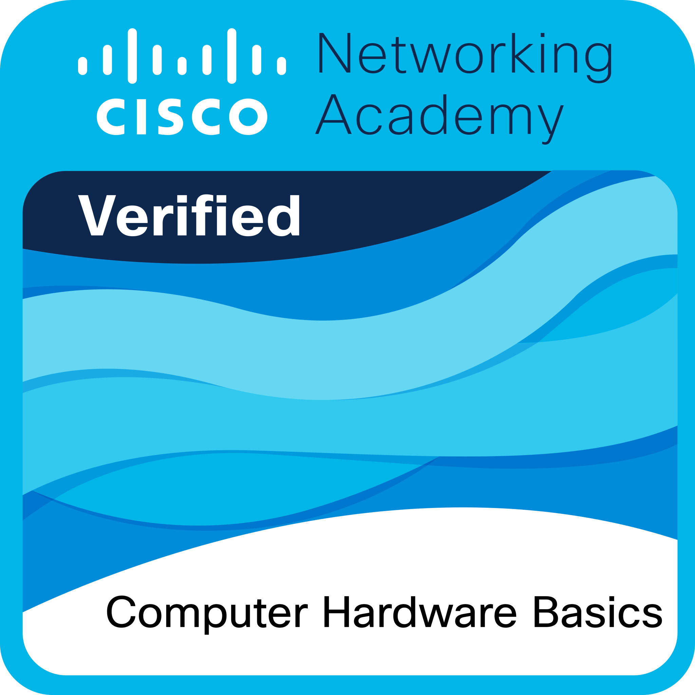

Formation Skills For All – Cisco
Dans cette formation, j’ai acquis des compétences essentielles sur le matériel informatique, notamment sur l’assemblage, la maintenance et le dépannage des composants d’un PC. Cette certification me permet de mieux comprendre le fonctionnement des équipements informatiques et de les optimiser efficacement.
Formation Skills For All – Cisco🔗 Lien internet : https://www.netacad.com/launch?id=10349eca-196c-4047-9c86-6dc1da4601f6&tab=curriculum&view=3677cbe6-844c-50bd-9f29-260822aaa887
Mes objectifs
✅ Identifier les composants d’un ordinateur et leur rôle
✅ Assembler et démonter un PC correctement
✅ Comprendre le fonctionnement des processeurs, cartes mères et mémoires
✅ Diagnostiquer et résoudre les problèmes matériels courants
✅ Assurer la maintenance préventive et corrective des équipements
✅ Développer des compétences utiles pour mon BTS SIO et mes expériences professionnelles
Pourquoi cette formation ?
📌 Améliorer mes connaissances en matériel informatique
📌 Être capable de réparer et optimiser un PC
📌 Développer des compétences essentielles pour mon stage et futur emploi
📌 Appliquer ces connaissances dans la gestion de parc informatique
Les outils que j'ai utilisé
🖥️ Plateforme Skills For All : Cours interactifs et vidéos explicatives
📚 Supports techniques : Fiches et guides sur les composants
🔧 Logiciels de diagnostic : HWMonitor, CPU-Z, CrystalDiskInfo
Quelques notions abordées dans la formation
1. Les composants d’un PC et leur rôle
📌 Carte mère : Cœur de l’ordinateur, connecte tous les composants
📌 Processeur (CPU) : Cerveau de l’ordinateur, exécute les instructions
📌 Mémoire vive (RAM) : Stockage temporaire pour accélérer le traitement des données
📌 Stockage (HDD/SSD) : Permet de conserver les fichiers et le système d’exploitation
📌 Carte graphique (GPU) : Gère l’affichage et accélère les calculs graphiques
📌 Alimentation (PSU) : Fournit l’énergie aux composants du PC
2. Montage et démontage d’un PC
🛠️ Choisir les composants compatibles🔌 Installer et connecter correctement les éléments
💡 Vérifier les performances et le refroidissement
3. Maintenance et dépannage
✅ Nettoyage et prévention des pannes✅ Vérification des températures et du bon fonctionnement des composants
✅ Remplacement et mise à niveau des pièces
Ma progression
✔ Compréhension approfondie du hardware✔ Acquisition des compétences pratiques en montage et maintenance
✔ Application des connaissances lors de mon stage et interventions techniques
✔ Meilleure gestion du matériel informatique en entreprise
